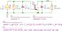

"mosPoleSplitting"
.source I1
.detector V_out
.param c_dg=0.3f I_s=1 C_s=0.2p R_s=100k R_ell=100k C_ell=0.5p
.model MN M gm=0.5m cgs=1.25f cdg={c_dg} cdb=0.2f go=20u
C1 1 0 C value={C_s} vinit=0
C2 out 0 C value={C_ell} vinit=0
I1 0 1 I value={I_s} noise=0 dc=0 dcvar=0
M1 out 1 0 0 MN
R1 1 0 R value={R_s} noisetemp=0 noiseflow=0 dcvar=0 dcvarlot=0
R2 out 0 R value={R_ell} noisetemp=0 noiseflow=0 dcvar=0 dcvarlot=0
.end
| RefDes | Nodes | Refs | Model | Param | Symbolic | Numeric |
|---|---|---|---|---|---|---|
| C1 | 1 0 | C | value | $C_{s}$ | $2.0 \cdot 10^{-13}$ | |
| vinit | $0$ | $0$ | ||||
| C2 | out 0 | C | value | $C_{\ell}$ | $5.0 \cdot 10^{-13}$ | |
| vinit | $0$ | $0$ | ||||
| Cdb_M1 | out 0 | C | value | $2.0 \cdot 10^{-16}$ | $2.0 \cdot 10^{-16}$ | |
| vinit | $0$ | $0$ | ||||
| Cdg_M1 | out 1 | C | value | $c_{dg}$ | $3.0 \cdot 10^{-16}$ | |
| vinit | $0$ | $0$ | ||||
| Cgb_M1 | 1 0 | C | value | $0$ | $0$ | |
| vinit | $0$ | $0$ | ||||
| Cgs_M1 | 1 0 | C | value | $1.25 \cdot 10^{-15}$ | $1.25 \cdot 10^{-15}$ | |
| vinit | $0$ | $0$ | ||||
| Csb_M1 | 0 0 | C | value | $0$ | $0$ | |
| vinit | $0$ | $0$ | ||||
| Gb_M1 | out 0 0 0 | g | value | $0$ | $0$ | |
| Gm_M1 | out 0 1 0 | g | value | $0.0005$ | $0.0005$ | |
| Go_M1 | out 0 out 0 | g | value | $2.0 \cdot 10^{-5}$ | $2.0 \cdot 10^{-5}$ | |
| I1 | 0 1 | I | value | $I_{s}$ | $1.0$ | |
| noise | $0$ | $0$ | ||||
| dc | $0$ | $0$ | ||||
| dcvar | $0$ | $0$ | ||||
| R1 | 1 0 | R | value | $R_{s}$ | $1.0 \cdot 10^{5}$ | |
| noisetemp | $0$ | $0$ | ||||
| noiseflow | $0$ | $0$ | ||||
| dcvar | $0$ | $0$ | ||||
| dcvarlot | $0$ | $0$ | ||||
| R2 | out 0 | R | value | $R_{\ell}$ | $1.0 \cdot 10^{5}$ | |
| noisetemp | $0$ | $0$ | ||||
| noiseflow | $0$ | $0$ | ||||
| dcvar | $0$ | $0$ | ||||
| dcvarlot | $0$ | $0$ |
| Name | Symbolic | Numeric |
|---|---|---|
| $C_{\ell}$ | $5.0 \cdot 10^{-13}$ | $5.0 \cdot 10^{-13}$ |
| $C_{s}$ | $2.0 \cdot 10^{-13}$ | $2.0 \cdot 10^{-13}$ |
| $I_{s}$ | $1$ | $1.0$ |
| $R_{\ell}$ | $1.0 \cdot 10^{5}$ | $1.0 \cdot 10^{5}$ |
| $R_{s}$ | $1.0 \cdot 10^{5}$ | $1.0 \cdot 10^{5}$ |
| $c_{dg}$ | $3.0 \cdot 10^{-16}$ | $3.0 \cdot 10^{-16}$ |
Go to mosPoleSplitting_index
SLiCAP: Symbolic Linear Circuit Analysis Program, Version 2.0.1 © 2009-2024 SLiCAP development team
For documentation, examples, support, updates and courses please visit: analog-electronics.tudelft.nl
Last project update: 2024-10-20 16:55:36